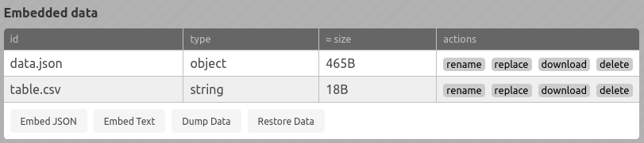

IMP! Data Embedding
Intro
IMP! (since version 0.5) allows you to embed data into HTML. Data can than be used by helpers, in static and/or interactive content, or in your own scripts.
Since version 0.6, the format will be changed!
Attaching data
You can add data in IMP! GUI. There are two types of embedded data: string and object (it can be changed in future). String is just unstructured string, you need to parse it in your code. Object is a structured data, which can be operated directly. Objects must be JSON-serializable in order to be saved with page.
 GUI for data, when no data is embedded
GUI for data, when no data is embedded
There are two buttons in the GUI. Embed JSON is for embedding well-formed JSON files. The data will be parsed and used as object. Embed text embeds unstructured text as is.
 Data embedded
From this GUI you can rename, replace, download or delete any data unit.
Retrieving data
Data, added in GUI is always available. It can be used in helpers to render static HTML, as well as in interactive content. There are more than one way to retrieve it.
Directly (v0.5.x)
Embedded data is saved in global variable window.impData, which has the following structure:
window.impData={
.
.
"data-id": {
"type": "string" or "object",
"data": -- data itself,
object or string
}
.
.
}
HTML tags are escaped. The variable will be available after DOMContentLoaded event.
Directly (maybe, since v0.6.x)
Since this version, embedded data is saved in global variable window.impData, which has much simpler structure:
window.impData={
.
.
"data-id": ... // data, object or string
.
.
}
Via fetch()
In IMP! GUI and in view mode, if helpers are enabled, standard fetch() function is patched to allow access to embedded data. Just pass data id with prepended "@" as url.
It is extremely useful when you want to use a library, which can accept url as parameter, and other options for passing data are somehow complicated.
For example, you can embed csv file as text, named stocks.csv, and then feed it to vega-lite via this special url, like this:
```helper:vega-embed
{
"description": "Stock prices of 5 ...",
"data": {"url": "@stocks.csv"},
//the rest of the code...
```
You may use in your own scripts. Remember to enable helpers, you do not need to use any helpers, just load the module.
Writting data
Helpers can write data, for example, in render() function, but this data may not be available to other helpers render(). You can write data in render() in order to read it later in animate() function.
Of course, you can write data in animate() function, but it won't be saved.
Please, do not use data embedding for saving helper parameters. Embedded data is global and has no namespaces, and helpers have no methods to clean up after deleting.